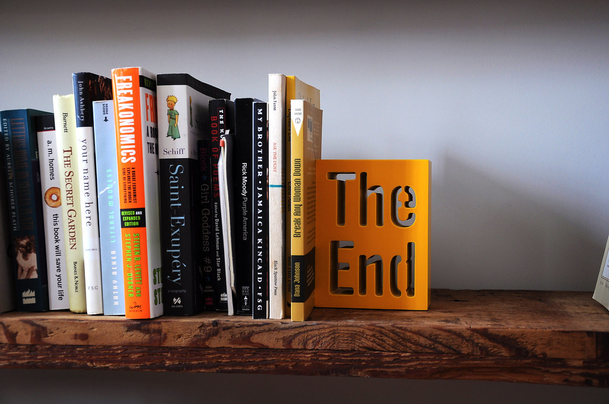

My Reading Journey
In my opinion, reading is one of the greatest hobbies to have. There are many benefits, such as entertainment, expanding your vocabulary, topics of conversation, connecting with others (such as book clubs), and many more.
In 2024, I decided to start keeping track of my reading progress on Goodreads. I like being able to keep a digital list of books I'm
interested in reading, along with being able to rate and review books I've already read.
Since June of 2024, I have read a total of 19 books.
Books I Read in 2024:
- The Most Wonderful Crime of The Year - Ally Carter
- The Other Woman - Sandie Jones
- The Seven Husbands of Evelyn Hugo - Taylor Jenkins Reid
- People We Meet on Vacation - Emily Henry
- Man's Search for Meaning - Viktor E. Frankl
- Funny Story - Emily Henry
- They Both Die at the End - Adam Silvera
- Phantasma - Kaylie Smith
- In My Dreams I Hold a Knife - Ashley Winstead
- Bunny - Mona Awad
- Acts of Desperation - Megan Nolan
- My Dark Vanessa - Katie Elizabeth Russell
- Happy Place - Emily Henry
- Boy Parts - Eliza Clark
- Yours Truly - Abby Jimenez
- The Midnight Library - Matt Haig
- Book Lovers - Emily Henry
- The Only One Left - Riley Sager
- The Tenant - Katrine Engberg
Click here to go to the top of the page!
